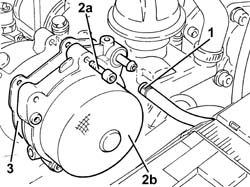
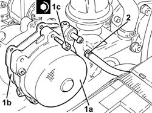

3330D30 VACUUM PUMP - R+R
- Path
- Procedures > 33 BRAKING SYSTEM > 3330 HYDRAULIC BRAKING SYSTEM > 3330D BRAKE VACUUM SYSTEM > 3330D30 VACUUM PUMP - R+R
- Kind
- repair procedure (removal / refitting; the operation number is the code)
- Applies to
- engines: 1.9 JTD 16V; all production periods
- Interactive page
- https://sloeber94.github.io/elrnDB-aGt/en/#/125001354
Applies to: engines: 1.9 JTD 16V; all production periods
 Removing
Removing
 Refitting
RefittingProceed with removal
- 1016A10 sound-proofing cover - r + r
1. Loosen the band and disconnect the vacuum pipe from the vacuum pump.
2. Undo the bolts (2a) and remove the vacuum unit (2b).
3. Remove the gasket.

Applies to: engines: 1.9 JTD 16V; all production periods
Refitting
Removing1. Place the vacuum unit (1a), complete with gasket (1b), back in its housing and secure it tightening the bolts (1c) to the recommended torque.
 | Fastening | Component | Ø | Value (daNm) |
|---|---|---|---|---|
1c | Bolt | BRAKE SERVO VACUUM PUMP | M6 | (Cylinder head side 45 55 50 |
2. Connect the vacuum intake pipe to the vacuum unit and tighten the band.

Applies to: engines: 1.9 JTD 16V; all production periods
Proceed with refitting
- 1016A10 sound-proofing cover - r + r
.